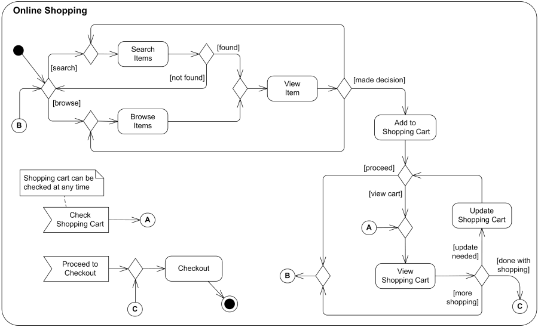

Seccion 3
Funcional de un sitio WEB
podríamos decir que el funcional de un site es un documento técnico donde se especifican todos los
procesos y comportamientos previstos en el back-end (es decir, los componentes que se ponen en marcha
como resultado de la interacción del usuario). En otras palabras, es un análisis del comportamiento de
navegación que puede tener un determinado usuario dentro del web y que forma parte de la arquitectura
de la información.
El funcional de un sitio web se elabora con la participación del cliente, que es quien conoce con
detalle los objetivos del proyecto. Asimismo, hay que tener en cuenta que sólo se aconseja llevarlo a
cabo en los casos en que los proyectos web adquieren una complejidad elevada, dado que deben ofrecer
una considerable cantidad de funcionalidades. Un buen ejemplo de ello puede ser una tienda online,
donde se despliega un amplio abanico de opciones ante el consumidor.
-
Para llevar a cabo el funcional de una web, se utilizan técnicas de UML (unified modeling language), lo que en castellano se conoce como LMU (lenguaje unificado de modelado. Mediante las mismas, se puede generar un diagrama de casos de uso, con todas las funciones que puede tener el sitio web o software en cuestión. De este modo, y gracias al esquema resultante, podemos observar cómo se desarrolla el proceso de comunicación y cuál es el comportamiento de un sistema, todo ello mediante su interacción con los usuarios y a través de las posibilidades que brindan sus funcionalidades.
Dado que estos diagramas describen cómo se comporta un usuario final (por ejemplo, si hace clic en un determinado botón o apartado, cómo realiza las búsquedas o si responde a una llamada a la acción), y cómo utiliza el sistema, estos recursos son una referencia para conocer qué requisitos debe desarrollar el equipo de programación para el site en cuestión. Sin embargo, cuando se trata de proyectos web de menor complejidad, no se precisa ni de funcionales ni de diagramas UML de casos de uso. Basta con un documento escrito donde se especifiquen las prestaciones principales y sus finalidades. En él, hay que detallar aspectos como: cuál debe ser el comportamiento de un buscador interno. cómo debe funcionar un slideshow o carrusel dónde colocar un menú desplegable. En resumen, debemos considerar el funcional como un instrumento para reflexionar sobre las necesidades del proyecto y pulir pequeños detalles. Asimismo, también es útil a la hora de plantear la programación del sitio. Para poder elaborar un análisis funcional eficiente y poderlo tomar como base de trabajo, es indispensable la participación activa del cliente, que es quien conoce los objetivos precisos del proyecto
Tomado desde: https://developer.mozilla.org/es/docs/Web
Creación de un nuevo sitio web
podríamos decir que el funcional de un site es un documento técnico donde se especifican todos los
procesos y comportamientos previstos en el back-end (es decir, los componentes que se ponen en marcha
como resultado de la interacción del usuario). En otras palabras, es un análisis del comportamiento de
navegación que puede tener un determinado usuario dentro del web y que forma parte de la arquitectura
de la información.
A pesar de la impresión de sencillez que se pueda apreciar en una pantalla, crear un buen sitio web
comparte los mismos requisitos que construir un rascacielos. Para tener éxito, ambos proyectos
necesitan una buena arquitectura.
Como cualquier estructura física que debe construirse de cero, la creación de un sitio web también
necesita un plano. Y ese plano o esquema consta de seis etapas.
-
Etapa 1: recopilación y aprendizaje
La primera etapa en la creación de un sitio web consiste en recopilar la mayor cantidad de información posible para conocer lo que quiere (y lo que no quiere) para su sitio. Puede recopilar esta información observando los sitios que usa actualmente, los sitios de sus competidores y los comentarios de sus amigos y colegas.
Como muchas empresas, puede optar por contratar los servicios de un diseñador web experto para crear su sitio. Esté preparado para responder a las preguntas del caso, ya que estas son
necesarias para el armado de un "informe creativo". El "informe creativo" funcionará como guía o referencia para la creación del sitio. Independientemente de si contrata o no a una empresa de diseño, debe conocer las respuestas a las siguientes preguntas:
Etapa 2: planificación
La información recopilada en la etapa 1 lo ayudará enormemente a la hora de planificar su sitio. Ahora se deben llevar a cabo las siguientes tareas:
Planear la estrategia de su sitio web Creación del mapa del sitio. Haga una lista de todas las áreas temáticas del sitio, así como los subtemas, para desarrollar un sistema de navegación homogéneo y fácil de entender.
Decisión sobre las tecnologías requeridas. Determine lo que necesitará para sus formularios interactivos, aplicaciones flash o sistemas de gestión de contenidos (CMS).
Determinación de las resoluciones compatibles. Teniendo en cuenta el aumento de la tasa de adaptación móvil de los sitios web, conviene considerar la implementación de un diseño web adaptable. Este enfoque permite que los sitios se ajusten perfectamente a cualquier pantalla, como la de un equipo de escritorio, tableta o teléfono inteligente. Creación de bocetos. Disponga las páginas de su sitio en un esquema de páginas ("wireframe").
Esto permitirá visualizar el diseño y brindar la estructura de su sitio web. Planifique el contenido. Saber qué quiere comunicar, y cuánto contenido tiene, proporciona una guía para el proceso de diseño.
Etapa 3: diseño
Si ya definió todos los temas vistos en las etapas 1 y 2, el diseño de la página de inicio y de las subpáginas posteriores será sencillo. Por ejemplo, establecer si su público objetivo son las mujeres solteras, de clase media, de entre 18 y 24 años y con estudios universitarios o los hombres casados, de clase alta, de entre 65 a 80 años y jubilados influye enormemente en los elementos de diseño y las aplicaciones que se usarán.
Ver el diseño de las páginas con contenidos y fotografías reales, su logotipo y el esquema de colores elegido, le darán vida a su visión para el sitio. ¡Aproveche esta etapa para hacer los cambios necesarios! Si está trabajando con diseñadores expertos, ellos le darán bocetos o prototipos en distintas etapas del proceso para que pueda hacer comentarios. Hacer cambios más adelante resulta costoso y difícil de implementar, por lo que debe aprovechar con inteligencia esta etapa.
Diseñar su sitio web Etapa 4: desarrollo
Una vez que el diseño está finalizado y aprobado es posible crear el sitio web. Su diseñador/desarrollador tomará todos los elementos gráficos del prototipo y los utilizará para crear un sitio funcional. También se implementarán en esta etapa los elementos interactivos, como por ejemplo los formularios de contacto, las animaciones flash y los carritos de compras.
En este momento es posible hacer cambios y arreglos menores.
Desarrollar su sitio web Etapa 5: pruebas, entrega y lanzamiento
Su desarrollador web pondrá a prueba el sitio web, verificando desde su correcta operación hasta posibles problemas de compatibilidad. Además, el desarrollador verificará que todo el código de su sitio web sea válido, cumpliendo con los estándares web actuales.
Una vez aprobado definitivamente, se cargarán los archivos del sitio web a sus servidores y se inaugurará el sitio.
Crear su sitio web
Etapa 6: mantenimiento
Ahora que finalmente está construido el sitio, es igual de importante mantenerlo. En la etapa de planificación de este proceso, decidió si quería encargarse del mantenimiento del sitio o prefería contratar a un tercero (como su diseñador web) para que lo haga. Si prefirió que todo quedara bajo su control, el diseñador generalmente opta por un diseño con CMS para permitirle editar el contenido de su sitio y agregar páginas nuevas.
El desarrollo de su sitio web no termina el día del lanzamiento. Al igual que en un edificio, es necesario tomar ciertas medidas para garantizar que el sitio opere en forma segura de la mejor manera posible.
Tomado desde: https://developer.mozilla.org/es/docs/Web